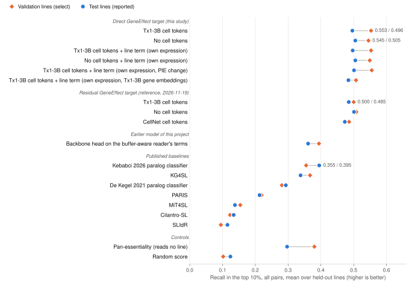
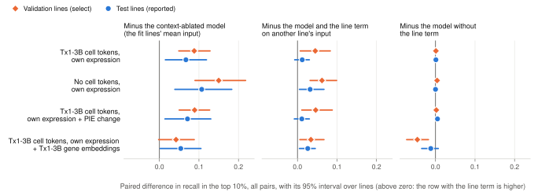

Stage two · SL benchmark
The Direct GeneEffect Target and the Line Term on the SL Benchmark
Question
Does a stage one that trains on GeneEffect itself give stage two trained weights? Does the SL score then change with the line? What do gene-in-line features of the line's cells add through a line term? This is the study of the plan of 2026-11-20 (§1 to §7). The previous experiment found two problems. Its early stop kept the untrained model in all runs, and its score did not change with the line (run record, Tables 6 and 8).
Model: two changes
The model is the gene-knowledge, cell-set model of SL protocol §18: gene vectors from function text, ESM C protein and STRING sources; a line as a mean token and one Tx1-3B token for each cell; a gene-specific reading of the cells; a pair head on the gene-in-line embeddings of the two genes. This study changes two parts.
- The stage-one target is GeneEffect itself. The target is (GeneEffect − c) / s, with one centre c and one scale s for every gene, fitted on the fit lines. The model must learn how essential each gene is. The untrained model predicts one value for every gene, so a trained epoch has a lower loss, and the early stop keeps trained weights. The previous target was the difference from the training gene mean; the rows of that target are the reference rows here.
- The SL score has a line term. A second head D reads the pair head's input and the gene-in-line features
of genes A and B in the line. The score is
s(c, A, B) = f(c, A, B) + D(c, A, B) − mean over r in R of D(r, A, B)
f is the model's own score in line c (the pair head of the chosen phase). R is the 44 SL training lines with training rows. The line term trains last, on the frozen f, with binary cross-entropy on s. Because it is a deviation from the training lines' mean, the gene pair alone cannot fill it. The line's gain is s − f. - Gene-in-line features. Own expression: the line's scaled pseudo-bulk value of the gene. PIE change: PIE's predicted change of the line's profile after the gene's loss, in 64 components. Tx1-3B gene level: the mean over the line's cells of Tx1-3B's contextual embedding of the gene (2,560 wide), and the share of the cells that hold the gene. Each source is projected to width 32 and the sources are summed.
Benchmark
- Labels:
data/sl_studies/benchmark_v2on the H20 (card). The SL split (configs/benchmarks/cell_line_sl_split.json) places 77 lines by hand: 44 training, 17 validation and 16 test. Rows: 1,420,001 training, 255,286 validation and 288,470 test. Stage two trains on 1,146,517 rows of the 44 training lines. - A screen is the set of pairs that one study tested in one line with one method. The headline uses the genetic screens with both classes: recall in the top 10% of each screen, over the smaller of its SL pairs and its top-10% places, averaged over screens, then studies, then lines. A perfect ranking gives 1; a random one about 0.10.
- Every held-out line is an unseen line: it enters a model only through its basal expression and cells. Negatives are tested and not called; they are not true negatives.
- Row sets. A pair is seen when the same study labelled it in a training line; else it is new. The seen pairs divide by what those training lines called them: no line called the pair SL, or the lines differ. These sets read no label of the held-out line. A row set is ranked inside it in each screen.
- The harness report also has two strata that the held-out label defines. They are not shown here.
Rows
- Direct target, Tx1-3B cell tokens: the gene-knowledge, cell-set model with the direct GeneEffect target
and one Tx1-3B token for each cell (
configs/sl/embedding_direct.yaml). Its score is f, without the line term. The PIE and Tx1-3B gene-level runs train the same model with the same seed; their f is equal to this f in every number. - Direct target, no cell tokens: the same model, each line on its mean token alone
(
embedding_direct_mean_token.yaml). - + line term (features): the score s of the same run, with the line term on the features in brackets.
Own expression is in all four line terms. PIE change:
embedding_direct_pie_change.yaml. Tx1-3B gene embeddings:embedding_direct_tx1_gene.yaml. - Context-ablated: the finished weights, scored with the fit lines' mean expression and no cells in place of each line's input. On another line's input: the same weights with the input of another benchmark line (the next line in a seeded order). For a line-term row, both f and the line term read the other line; R does not change. No model is refitted for these rows.
- Residual target (reference): the finished runs of 2026-11-19 with the residual GeneEffect target (run record). Their early stop kept the untrained model, so stage two started from untrained weights.
- Backbone head on the buffer-aware reader's terms: the project's earlier stage-two model (SL protocol §12).
- Published baselines: KG4SL, Cilantro-SL, PARIS, SLIdR, De Kegel 2021, Kebabci 2026 and MiT4SL, as in the baseline record.
- Controls and references: stage one's predicted GeneEffect (linear expression model), pan-essentiality (the gene mean GeneEffect of the two genes, which reads no line), measured GeneEffect, the labels (the ceiling) and a random score.
What ran
Each run is hpc/run.sh sl-embedding configs/sl/<config>.yaml --run-id
<config>_seed0_v2 on one GPU. Stage one fits the GeneEffect of 928 lines without an SL label (366 with
cells; 652,399 cells), with the early stop on 47 SL training lines with GeneEffect. Stage two first fits the pair
head on the frozen model, then the whole model with the GeneEffect loss at weight 1. The line term trains last.
Validation recall in the top 10% selects each epoch and phase. Outputs on the H20:
outputs/sl/embedding/<run id>/,
outputs/sl/benchmark_baselines/benchmark_line_term_seed0_v2/ and the caches under
data/sl_gene_in_line/v1/. Copied reports: harness
(config), Tx1-3B cell
tokens, no cell tokens,
PIE change,
Tx1-3B gene embeddings, each with its
_metrics.json; the two first runs (Tx1-3B cell
tokens, no cell tokens); the cache reports
(Tx1-3B gene level,
PIE change).
| Step | Port | Code | Finished |
|---|---|---|---|
PIE change cache (hpc/run.sh sl-gene-in-line configs/sl/gene_in_line.yaml --steps pie_change, CPU) | 30838 | 15a754f | 19:44 |
| Tx1-3B gene-level pilot on one line | 30838 | 15a754f | 19:44 |
| First runs with the first base of the line term (the model on the mean input): Tx1-3B cell tokens, no cell tokens | 30757 | 15a754f | 19:55, 19:50 |
Tx1-3B gene-level cache, 86 lines, four GPUs (--steps tx1_gene --shard I/4), after the fix of the symbol case | 30838 | d9d2950 | 20:15 |
| Final runs: Tx1-3B cell tokens, no cell tokens, PIE change, Tx1-3B gene embeddings (one GPU each) | 30757 | 880fb7e | 20:21, 20:20, 20:22, 20:24 |
Harness (hpc/run.sh sl-baselines configs/sl/benchmark_line_term.yaml --run-id benchmark_line_term_seed0_v2, CPU) | 30757 | 880fb7e | 20:30 |
A first Tx1-3B gene-level cache matched gene symbols with case. About 58 genes of each line had no value in it. It was moved aside on the H20 and no run used it.
Results: all pairs
Recall in the top 10% is the share of a screen's SL pairs that a model ranks in the screen's top 10%, over the smaller of the SL pairs and the top-10% places. The baselines' scores are those of the run of 2026-11-13, read again by this harness run.

| Model | Recall, validation | Recall, test | AUROC, validation | AUROC, test | AUPRC over positive rate, validation | AUPRC over positive rate, test |
|---|---|---|---|---|---|---|
| This study: direct GeneEffect target | ||||||
| Direct target, Tx1-3B cell tokens | 0.553 | 0.496 | 0.817 | 0.786 | 12.9 | 9.0 |
| Direct target, no cell tokens | 0.545 | 0.505 | 0.813 | 0.789 | 18.9 | 9.0 |
| Direct target, Tx1-3B cell tokens + line term (own expression) | 0.553 | 0.497 | 0.817 | 0.786 | 12.1 | 8.9 |
| Direct target, no cell tokens + line term (own expression) | 0.549 | 0.505 | 0.813 | 0.790 | 19.0 | 9.1 |
| Direct target, Tx1-3B cell tokens + line term (own expression, PIE change) | 0.555 | 0.501 | 0.817 | 0.786 | 12.9 | 9.0 |
| Direct target, Tx1-3B cell tokens + line term (own expression, Tx1-3B gene embeddings) | 0.507 | 0.484 | 0.803 | 0.777 | 9.8 | 7.8 |
| This study with the line's input replaced (no refit; not ranked) | ||||||
| Direct target, Tx1-3B cell tokens, context-ablated (the fit lines' mean input) | 0.466 | 0.430 | 0.780 | 0.761 | 5.6 | 4.6 |
| Direct target, no cell tokens, context-ablated (the fit lines' mean input) | 0.398 | 0.399 | 0.732 | 0.722 | 4.8 | 5.7 |
| Direct target, Tx1-3B cell tokens, on another line's input | 0.512 | 0.490 | — | — | — | — |
| Direct target, no cell tokens, on another line's input | 0.485 | 0.471 | — | — | — | — |
| Direct target, Tx1-3B cell tokens + line term (own expression), both on another line's input | 0.509 | 0.485 | 0.808 | 0.780 | 16.8 | 8.4 |
| Direct target, no cell tokens + line term (own expression), both on another line's input | 0.487 | 0.473 | 0.793 | 0.766 | 13.0 | 8.6 |
| Direct target, Tx1-3B cell tokens + line term (own expression, PIE change), both on another line's input | 0.509 | 0.489 | 0.809 | 0.781 | 16.9 | 8.4 |
| Direct target, Tx1-3B cell tokens + line term (own expression, Tx1-3B gene embeddings), both on another line's input | 0.473 | 0.458 | 0.789 | 0.766 | 12.6 | 8.4 |
| Reference: residual GeneEffect target, run of 2026-11-19 (not ranked) | ||||||
| Residual target, Tx1-3B cell tokens | 0.500 | 0.485 | 0.787 | 0.774 | 20.0 | 7.9 |
| Residual target, no cell tokens | 0.508 | 0.501 | 0.789 | 0.776 | 17.5 | 8.5 |
| Residual target, CellNet cell tokens | 0.486 | 0.473 | 0.783 | 0.766 | 9.8 | 8.0 |
| Earlier model of this project | ||||||
| Backbone head on the buffer-aware reader's terms (SL protocol §12) | 0.394 | 0.361 | 0.743 | 0.716 | 5.1 | 4.2 |
| Published baselines | ||||||
| Kebabci 2026 paralog classifier on stage one's predicted GeneEffect | 0.355 | 0.395 | 0.656 | 0.664 | 5.7 | 6.4 |
| KG4SL | 0.367 | 0.338 | 0.689 | 0.653 | 3.4 | 3.0 |
| De Kegel 2021 paralog classifier | 0.281 | 0.293 | 0.656 | 0.665 | 3.3 | 3.9 |
| PARIS | 0.219 | 0.213 | 0.573 | 0.572 | 33.9 | 2.8 |
| MiT4SL | 0.154 | 0.138 | 0.589 | 0.557 | 1.6 | 1.4 |
| Cilantro-SL | 0.123 | 0.134 | 0.507 | 0.510 | 1.2 | 1.2 |
| SLIdR | 0.095 | 0.115 | 0.483 | 0.498 | 1.0 | 1.0 |
| Controls and references (not ranked) | ||||||
| Stage one's predicted GeneEffect (linear expression model) | 0.381 | 0.298 | 0.730 | 0.683 | 4.6 | 3.6 |
| Pan-essentiality (gene mean GeneEffect, reads no line) | 0.380 | 0.297 | 0.728 | 0.679 | 4.5 | 3.5 |
| Measured GeneEffect (reference, lines with GeneEffect) | 0.425 | 0.296 | 0.736 | 0.639 | 7.5 | 3.9 |
| Labels as the score (check: the ceiling) | 1.000 | 1.000 | 1.000 | 1.000 | 96.3 | 396.5 |
| Random score (check) | 0.102 | 0.124 | 0.496 | 0.519 | 1.1 | 1.2 |
Results: paired differences on all pairs
Each difference pairs the two rows line by line. A row with the line term that reads the line must be above the same weights on a replaced input. The context-ablated input is one that the model never saw in stage two. Another line's input is a real input of the wrong line, so it is the stricter control.

| Row − control | Validation | Test |
|---|---|---|
| What the direct target adds (direct minus residual target) | ||
| Direct target, Tx1-3B cell tokens − Residual target, Tx1-3B cell tokens | +0.052 [+0.019, +0.088] (17) | +0.011 [−0.027, +0.055] (16) |
| Direct target, no cell tokens − Residual target, no cell tokens | +0.036 [+0.009, +0.067] (17) | +0.004 [−0.018, +0.025] (16) |
| Does the score read the line? (with the line term minus the same weights on a replaced input) | ||
| Direct target, Tx1-3B cell tokens + line term (own expression) − Direct target, Tx1-3B cell tokens, context-ablated (the fit lines' mean input) | +0.088 [+0.049, +0.128] (17) | +0.067 [+0.015, +0.119] (16) |
| Direct target, Tx1-3B cell tokens + line term (own expression) − Direct target, Tx1-3B cell tokens + line term (own expression), both on another line's input | +0.045 [+0.007, +0.083] (17) | +0.012 [−0.007, +0.030] (16) |
| Direct target, no cell tokens + line term (own expression) − Direct target, no cell tokens, context-ablated (the fit lines' mean input) | +0.150 [+0.090, +0.218] (17) | +0.107 [+0.039, +0.183] (16) |
| Direct target, no cell tokens + line term (own expression) − Direct target, no cell tokens + line term (own expression), both on another line's input | +0.062 [+0.032, +0.099] (17) | +0.032 [+0.005, +0.067] (16) |
| Direct target, Tx1-3B cell tokens + line term (own expression, PIE change) − Direct target, Tx1-3B cell tokens, context-ablated (the fit lines' mean input) (PIE run) | +0.089 [+0.050, +0.127] (17) | +0.071 [+0.014, +0.130] (16) |
| Direct target, Tx1-3B cell tokens + line term (own expression, PIE change) − Direct target, Tx1-3B cell tokens + line term (own expression, PIE change), both on another line's input | +0.046 [+0.011, +0.088] (17) | +0.011 [−0.008, +0.030] (16) |
| Direct target, Tx1-3B cell tokens + line term (own expression, Tx1-3B gene embeddings) − Direct target, Tx1-3B cell tokens, context-ablated (the fit lines' mean input) (Tx1-3B gene-level run) | +0.042 [−0.002, +0.088] (17) | +0.054 [+0.002, +0.105] (16) |
| Direct target, Tx1-3B cell tokens + line term (own expression, Tx1-3B gene embeddings) − Direct target, Tx1-3B cell tokens + line term (own expression, Tx1-3B gene embeddings), both on another line's input | +0.034 [+0.006, +0.067] (17) | +0.026 [+0.005, +0.045] (16) |
| What the line term adds (with minus without the line term) | ||
| Direct target, Tx1-3B cell tokens + line term (own expression) − Direct target, Tx1-3B cell tokens | +0.001 [−0.005, +0.006] (17) | +0.001 [−0.004, +0.005] (16) |
| Direct target, no cell tokens + line term (own expression) − Direct target, no cell tokens | +0.004 [−0.002, +0.010] (17) | +0.000 [−0.003, +0.004] (16) |
| Direct target, Tx1-3B cell tokens + line term (own expression, PIE change) − Direct target, Tx1-3B cell tokens (the PIE run's model) | +0.002 [−0.001, +0.005] (17) | +0.005 [−0.000, +0.010] (16) |
| Direct target, Tx1-3B cell tokens + line term (own expression, Tx1-3B gene embeddings) − Direct target, Tx1-3B cell tokens (the Tx1-3B gene-level run's model) | −0.046 [−0.073, −0.018] (17) | −0.012 [−0.035, +0.007] (16) |
| What the cell tokens add | ||
| Direct target, Tx1-3B cell tokens − Direct target, no cell tokens | +0.008 [−0.011, +0.027] (17) | −0.009 [−0.039, +0.020] (16) |
| Direct target, Tx1-3B cell tokens + line term (own expression) − Direct target, no cell tokens + line term (own expression) | +0.005 [−0.018, +0.027] (17) | −0.008 [−0.040, +0.023] (16) |
| What PIE change and Tx1-3B gene embeddings add to the own-expression line term | ||
| Direct target, Tx1-3B cell tokens + line term (own expression, PIE change) − Direct target, Tx1-3B cell tokens + line term (own expression) | +0.001 [−0.004, +0.006] (17) | +0.004 [−0.001, +0.009] (16) |
| Direct target, Tx1-3B cell tokens + line term (own expression, Tx1-3B gene embeddings) − Direct target, Tx1-3B cell tokens + line term (own expression) | −0.046 [−0.072, −0.021] (17) | −0.013 [−0.034, +0.004] (16) |
| Against the best published baseline | ||
| Direct target, Tx1-3B cell tokens + line term (own expression) − Kebabci 2026 paralog classifier on stage one's predicted GeneEffect | +0.198 [+0.121, +0.274] (17) | +0.102 [+0.054, +0.149] (16) |
Results: row sets
Table 3 follows each model from the training lines to unseen lines, and there from seen pairs to new pairs. On seen pairs that no training line called SL, an SL call is new in the held-out line. On seen pairs where the training lines differ, the line must decide the call; a gain below about 0.05 will not show there (13 / 10 lines).
| Model | Training lines (in sample) | Seen pairs | New pairs, both genes seen | Seen pairs, no training line called SL | Seen pairs, the training lines differ |
|---|---|---|---|---|---|
| This study: direct GeneEffect target | |||||
| Direct target, Tx1-3B cell tokens | 0.846 | 0.560 / 0.520 | 0.548 / 0.518 | 0.443 / 0.330 | 0.438 / 0.627 |
| Direct target, no cell tokens | 0.923 | 0.556 / 0.529 | 0.555 / 0.434 | 0.352 / 0.332 | 0.405 / 0.614 |
| Direct target, Tx1-3B cell tokens + line term (own expression) | 0.848 | 0.559 / 0.524 | 0.549 / 0.515 | 0.426 / 0.324 | 0.447 / 0.607 |
| Direct target, no cell tokens + line term (own expression) | 0.925 | 0.557 / 0.529 | 0.563 / 0.440 | 0.349 / 0.338 | 0.395 / 0.582 |
| Direct target, Tx1-3B cell tokens + line term (own expression, PIE change) | 0.849 | 0.561 / 0.524 | 0.550 / 0.520 | 0.451 / 0.330 | 0.446 / 0.598 |
| Direct target, Tx1-3B cell tokens + line term (own expression, Tx1-3B gene embeddings) | 0.914 | 0.515 / 0.508 | 0.515 / 0.425 | 0.417 / 0.315 | 0.391 / 0.514 |
| This study with the line's input replaced (not ranked) | |||||
| Direct target, Tx1-3B cell tokens, context-ablated (the fit lines' mean input) | 0.580 | 0.464 / 0.448 | 0.330 / 0.477 | 0.354 / 0.271 | 0.305 / 0.396 |
| Direct target, no cell tokens, context-ablated (the fit lines' mean input) | 0.475 | 0.379 / 0.402 | 0.508 / 0.538 | 0.300 / 0.256 | 0.279 / 0.398 |
| Direct target, Tx1-3B cell tokens, on another line's input | 0.708 | 0.522 / 0.510 | 0.370 / 0.529 | 0.407 / 0.315 | 0.475 / 0.576 |
| Direct target, no cell tokens, on another line's input | 0.709 | 0.513 / 0.490 | 0.354 / 0.481 | 0.331 / 0.293 | 0.376 / 0.502 |
| Reference: residual GeneEffect target (not ranked) | |||||
| Residual target, Tx1-3B cell tokens | 0.782 | 0.518 / 0.514 | 0.475 / 0.354 | 0.388 / 0.375 | 0.411 / 0.564 |
| Residual target, no cell tokens | 0.898 | 0.529 / 0.525 | 0.472 / 0.403 | 0.366 / 0.347 | 0.427 / 0.552 |
| Published baselines | |||||
| Kebabci 2026 paralog classifier on stage one's predicted GeneEffect | — | 0.355 / 0.412 | 0.330 / 0.411 | 0.229 / 0.303 | 0.371 / 0.564 |
| KG4SL | — | 0.374 / 0.368 | 0.310 / 0.323 | 0.290 / 0.226 | 0.287 / 0.461 |
| Controls (not ranked) | |||||
| Pan-essentiality (gene mean GeneEffect, reads no line) | 0.318 | 0.353 / 0.292 | 0.329 / 0.382 | 0.409 / 0.261 | 0.263 / 0.301 |
| Random score (check) | 0.093 | 0.101 / 0.119 | 0.224 / 0.220 | 0.071 / 0.095 | 0.230 / 0.225 |
Table 4: the paired differences of Table 2 on each row set
| Row − control | Validation | Test |
|---|---|---|
| Seen pairs | ||
| What the direct target adds (direct minus residual target) | ||
| Direct target, Tx1-3B cell tokens − Residual target, Tx1-3B cell tokens | +0.041 [+0.018, +0.066] (15) | +0.007 [−0.029, +0.038] (13) |
| Direct target, no cell tokens − Residual target, no cell tokens | +0.027 [+0.005, +0.048] (15) | +0.005 [−0.014, +0.025] (13) |
| Does the score read the line? (with the line term minus the same weights on a replaced input) | ||
| Direct target, Tx1-3B cell tokens + line term (own expression) − Direct target, Tx1-3B cell tokens, context-ablated (the fit lines' mean input) | +0.095 [+0.045, +0.153] (15) | +0.076 [+0.022, +0.131] (13) |
| Direct target, Tx1-3B cell tokens + line term (own expression) − Direct target, Tx1-3B cell tokens + line term (own expression), both on another line's input | +0.042 [−0.000, +0.092] (15) | +0.019 [+0.000, +0.038] (13) |
| Direct target, no cell tokens + line term (own expression) − Direct target, no cell tokens, context-ablated (the fit lines' mean input) | +0.178 [+0.106, +0.256] (15) | +0.127 [+0.055, +0.192] (13) |
| Direct target, no cell tokens + line term (own expression) − Direct target, no cell tokens + line term (own expression), both on another line's input | +0.046 [+0.025, +0.068] (15) | +0.035 [+0.003, +0.076] (13) |
| Direct target, Tx1-3B cell tokens + line term (own expression, PIE change) − Direct target, Tx1-3B cell tokens, context-ablated (the fit lines' mean input) (PIE run) | +0.097 [+0.044, +0.151] (15) | +0.076 [+0.017, +0.142] (13) |
| Direct target, Tx1-3B cell tokens + line term (own expression, PIE change) − Direct target, Tx1-3B cell tokens + line term (own expression, PIE change), both on another line's input | +0.042 [+0.002, +0.089] (15) | +0.014 [−0.009, +0.036] (13) |
| Direct target, Tx1-3B cell tokens + line term (own expression, Tx1-3B gene embeddings) − Direct target, Tx1-3B cell tokens, context-ablated (the fit lines' mean input) (Tx1-3B gene-level run) | +0.051 [−0.006, +0.112] (15) | +0.060 [+0.003, +0.114] (13) |
| Direct target, Tx1-3B cell tokens + line term (own expression, Tx1-3B gene embeddings) − Direct target, Tx1-3B cell tokens + line term (own expression, Tx1-3B gene embeddings), both on another line's input | +0.028 [−0.003, +0.068] (15) | +0.024 [−0.001, +0.045] (13) |
| What the line term adds (with minus without the line term) | ||
| Direct target, Tx1-3B cell tokens + line term (own expression) − Direct target, Tx1-3B cell tokens | −0.001 [−0.009, +0.007] (15) | +0.003 [−0.005, +0.012] (13) |
| Direct target, no cell tokens + line term (own expression) − Direct target, no cell tokens | +0.001 [−0.009, +0.011] (15) | −0.001 [−0.005, +0.004] (13) |
| Direct target, Tx1-3B cell tokens + line term (own expression, PIE change) − Direct target, Tx1-3B cell tokens (the PIE run's model) | +0.001 [−0.003, +0.006] (15) | +0.003 [−0.003, +0.009] (13) |
| Direct target, Tx1-3B cell tokens + line term (own expression, Tx1-3B gene embeddings) − Direct target, Tx1-3B cell tokens (the Tx1-3B gene-level run's model) | −0.045 [−0.074, −0.014] (15) | −0.012 [−0.032, +0.007] (13) |
| What the cell tokens add | ||
| Direct target, Tx1-3B cell tokens − Direct target, no cell tokens | +0.004 [−0.020, +0.028] (15) | −0.009 [−0.042, +0.024] (13) |
| Direct target, Tx1-3B cell tokens + line term (own expression) − Direct target, no cell tokens + line term (own expression) | +0.001 [−0.025, +0.028] (15) | −0.005 [−0.041, +0.027] (13) |
| What PIE change and Tx1-3B gene embeddings add to the own-expression line term | ||
| Direct target, Tx1-3B cell tokens + line term (own expression, PIE change) − Direct target, Tx1-3B cell tokens + line term (own expression) | +0.002 [−0.004, +0.009] (15) | −0.000 [−0.008, +0.007] (13) |
| Direct target, Tx1-3B cell tokens + line term (own expression, Tx1-3B gene embeddings) − Direct target, Tx1-3B cell tokens + line term (own expression) | −0.044 [−0.073, −0.013] (15) | −0.015 [−0.033, +0.003] (13) |
| Against the best published baseline | ||
| Direct target, Tx1-3B cell tokens + line term (own expression) − Kebabci 2026 paralog classifier on stage one's predicted GeneEffect | +0.204 [+0.127, +0.280] (15) | +0.112 [+0.073, +0.159] (13) |
| New pairs, both genes seen | ||
| What the direct target adds (direct minus residual target) | ||
| Direct target, Tx1-3B cell tokens − Residual target, Tx1-3B cell tokens | +0.073 [−0.010, +0.159] (8) | +0.164 [−0.048, +0.413] (10) |
| Direct target, no cell tokens − Residual target, no cell tokens | +0.083 [+0.013, +0.153] (8) | +0.031 [−0.016, +0.098] (10) |
| Does the score read the line? (with the line term minus the same weights on a replaced input) | ||
| Direct target, Tx1-3B cell tokens + line term (own expression) − Direct target, Tx1-3B cell tokens, context-ablated (the fit lines' mean input) | +0.219 [+0.033, +0.482] (8) | +0.038 [−0.194, +0.291] (10) |
| Direct target, Tx1-3B cell tokens + line term (own expression) − Direct target, Tx1-3B cell tokens + line term (own expression), both on another line's input | +0.173 [+0.008, +0.442] (8) | −0.019 [−0.048, +0.003] (10) |
| Direct target, no cell tokens + line term (own expression) − Direct target, no cell tokens, context-ablated (the fit lines' mean input) | +0.054 [−0.021, +0.129] (8) | −0.097 [−0.323, +0.091] (10) |
| Direct target, no cell tokens + line term (own expression) − Direct target, no cell tokens + line term (own expression), both on another line's input | +0.204 [+0.032, +0.481] (8) | −0.039 [−0.105, +0.010] (10) |
| Direct target, Tx1-3B cell tokens + line term (own expression, PIE change) − Direct target, Tx1-3B cell tokens, context-ablated (the fit lines' mean input) (PIE run) | +0.220 [+0.032, +0.476] (8) | +0.043 [−0.162, +0.299] (10) |
| Direct target, Tx1-3B cell tokens + line term (own expression, PIE change) − Direct target, Tx1-3B cell tokens + line term (own expression, PIE change), both on another line's input | +0.177 [+0.021, +0.424] (8) | −0.009 [−0.031, +0.007] (10) |
| Direct target, Tx1-3B cell tokens + line term (own expression, Tx1-3B gene embeddings) − Direct target, Tx1-3B cell tokens, context-ablated (the fit lines' mean input) (Tx1-3B gene-level run) | +0.185 [−0.029, +0.466] (8) | −0.052 [−0.305, +0.260] (10) |
| Direct target, Tx1-3B cell tokens + line term (own expression, Tx1-3B gene embeddings) − Direct target, Tx1-3B cell tokens + line term (own expression, Tx1-3B gene embeddings), both on another line's input | +0.173 [+0.016, +0.425] (8) | −0.119 [−0.289, +0.012] (10) |
| What the line term adds (with minus without the line term) | ||
| Direct target, Tx1-3B cell tokens + line term (own expression) − Direct target, Tx1-3B cell tokens | +0.001 [−0.010, +0.011] (8) | −0.003 [−0.009, +0.000] (10) |
| Direct target, no cell tokens + line term (own expression) − Direct target, no cell tokens | +0.007 [+0.001, +0.015] (8) | +0.006 [+0.001, +0.012] (10) |
| Direct target, Tx1-3B cell tokens + line term (own expression, PIE change) − Direct target, Tx1-3B cell tokens (the PIE run's model) | +0.002 [−0.003, +0.007] (8) | +0.002 [−0.002, +0.009] (10) |
| Direct target, Tx1-3B cell tokens + line term (own expression, Tx1-3B gene embeddings) − Direct target, Tx1-3B cell tokens (the Tx1-3B gene-level run's model) | −0.033 [−0.057, −0.006] (8) | −0.093 [−0.243, −0.001] (10) |
| What the cell tokens add | ||
| Direct target, Tx1-3B cell tokens − Direct target, no cell tokens | −0.007 [−0.042, +0.025] (8) | +0.084 [−0.068, +0.303] (10) |
| Direct target, Tx1-3B cell tokens + line term (own expression) − Direct target, no cell tokens + line term (own expression) | −0.014 [−0.051, +0.020] (8) | +0.075 [−0.073, +0.315] (10) |
| What PIE change and Tx1-3B gene embeddings add to the own-expression line term | ||
| Direct target, Tx1-3B cell tokens + line term (own expression, PIE change) − Direct target, Tx1-3B cell tokens + line term (own expression) | +0.001 [−0.006, +0.008] (8) | +0.006 [+0.000, +0.014] (10) |
| Direct target, Tx1-3B cell tokens + line term (own expression, Tx1-3B gene embeddings) − Direct target, Tx1-3B cell tokens + line term (own expression) | −0.034 [−0.063, −0.001] (8) | −0.090 [−0.243, +0.003] (10) |
| Against the best published baseline | ||
| Direct target, Tx1-3B cell tokens + line term (own expression) − Kebabci 2026 paralog classifier on stage one's predicted GeneEffect | +0.220 [+0.039, +0.421] (8) | +0.104 [−0.026, +0.247] (10) |
| Seen pairs that no training line called SL | ||
| What the direct target adds (direct minus residual target) | ||
| Direct target, Tx1-3B cell tokens − Residual target, Tx1-3B cell tokens | +0.055 [−0.013, +0.118] (14) | −0.045 [−0.154, +0.031] (11) |
| Direct target, no cell tokens − Residual target, no cell tokens | −0.014 [−0.103, +0.059] (14) | −0.015 [−0.098, +0.075] (11) |
| Does the score read the line? (with the line term minus the same weights on a replaced input) | ||
| Direct target, Tx1-3B cell tokens + line term (own expression) − Direct target, Tx1-3B cell tokens, context-ablated (the fit lines' mean input) | +0.072 [−0.003, +0.156] (14) | +0.053 [−0.012, +0.146] (11) |
| Direct target, Tx1-3B cell tokens + line term (own expression) − Direct target, Tx1-3B cell tokens + line term (own expression), both on another line's input | +0.037 [−0.002, +0.086] (14) | +0.013 [−0.035, +0.056] (11) |
| Direct target, no cell tokens + line term (own expression) − Direct target, no cell tokens, context-ablated (the fit lines' mean input) | +0.050 [−0.019, +0.105] (14) | +0.082 [+0.004, +0.163] (11) |
| Direct target, no cell tokens + line term (own expression) − Direct target, no cell tokens + line term (own expression), both on another line's input | +0.022 [−0.013, +0.058] (14) | +0.068 [−0.017, +0.154] (11) |
| Direct target, Tx1-3B cell tokens + line term (own expression, PIE change) − Direct target, Tx1-3B cell tokens, context-ablated (the fit lines' mean input) (PIE run) | +0.097 [+0.030, +0.171] (14) | +0.060 [−0.028, +0.195] (11) |
| Direct target, Tx1-3B cell tokens + line term (own expression, PIE change) − Direct target, Tx1-3B cell tokens + line term (own expression, PIE change), both on another line's input | +0.050 [+0.004, +0.100] (14) | +0.019 [−0.051, +0.098] (11) |
| Direct target, Tx1-3B cell tokens + line term (own expression, Tx1-3B gene embeddings) − Direct target, Tx1-3B cell tokens, context-ablated (the fit lines' mean input) (Tx1-3B gene-level run) | +0.063 [−0.035, +0.202] (14) | +0.045 [−0.050, +0.179] (11) |
| Direct target, Tx1-3B cell tokens + line term (own expression, Tx1-3B gene embeddings) − Direct target, Tx1-3B cell tokens + line term (own expression, Tx1-3B gene embeddings), both on another line's input | +0.043 [−0.040, +0.141] (14) | +0.059 [−0.080, +0.226] (11) |
| What the line term adds (with minus without the line term) | ||
| Direct target, Tx1-3B cell tokens + line term (own expression) − Direct target, Tx1-3B cell tokens | −0.018 [−0.060, +0.013] (14) | −0.007 [−0.049, +0.021] (11) |
| Direct target, no cell tokens + line term (own expression) − Direct target, no cell tokens | −0.003 [−0.015, +0.013] (14) | +0.006 [−0.006, +0.022] (11) |
| Direct target, Tx1-3B cell tokens + line term (own expression, PIE change) − Direct target, Tx1-3B cell tokens (the PIE run's model) | +0.008 [−0.006, +0.023] (14) | −0.000 [−0.012, +0.008] (11) |
| Direct target, Tx1-3B cell tokens + line term (own expression, Tx1-3B gene embeddings) − Direct target, Tx1-3B cell tokens (the Tx1-3B gene-level run's model) | −0.026 [−0.089, +0.036] (14) | −0.015 [−0.080, +0.029] (11) |
| What the cell tokens add | ||
| Direct target, Tx1-3B cell tokens − Direct target, no cell tokens | +0.091 [+0.034, +0.148] (14) | −0.002 [−0.068, +0.065] (11) |
| Direct target, Tx1-3B cell tokens + line term (own expression) − Direct target, no cell tokens + line term (own expression) | +0.076 [+0.018, +0.142] (14) | −0.015 [−0.095, +0.056] (11) |
| What PIE change and Tx1-3B gene embeddings add to the own-expression line term | ||
| Direct target, Tx1-3B cell tokens + line term (own expression, PIE change) − Direct target, Tx1-3B cell tokens + line term (own expression) | +0.026 [−0.000, +0.065] (14) | +0.007 [−0.020, +0.049] (11) |
| Direct target, Tx1-3B cell tokens + line term (own expression, Tx1-3B gene embeddings) − Direct target, Tx1-3B cell tokens + line term (own expression) | −0.008 [−0.066, +0.056] (14) | −0.008 [−0.075, +0.056] (11) |
| Against the best published baseline | ||
| Direct target, Tx1-3B cell tokens + line term (own expression) − Kebabci 2026 paralog classifier on stage one's predicted GeneEffect | +0.196 [+0.071, +0.337] (14) | +0.020 [−0.083, +0.134] (11) |
| Seen pairs on which the training lines differ | ||
| What the direct target adds (direct minus residual target) | ||
| Direct target, Tx1-3B cell tokens − Residual target, Tx1-3B cell tokens | +0.026 [−0.050, +0.087] (13) | +0.063 [+0.004, +0.132] (10) |
| Direct target, no cell tokens − Residual target, no cell tokens | −0.022 [−0.118, +0.084] (13) | +0.062 [+0.021, +0.106] (10) |
| Does the score read the line? (with the line term minus the same weights on a replaced input) | ||
| Direct target, Tx1-3B cell tokens + line term (own expression) − Direct target, Tx1-3B cell tokens, context-ablated (the fit lines' mean input) | +0.142 [+0.029, +0.255] (13) | +0.211 [+0.121, +0.288] (10) |
| Direct target, Tx1-3B cell tokens + line term (own expression) − Direct target, Tx1-3B cell tokens + line term (own expression), both on another line's input | −0.025 [−0.095, +0.036] (13) | +0.029 [−0.002, +0.059] (10) |
| Direct target, no cell tokens + line term (own expression) − Direct target, no cell tokens, context-ablated (the fit lines' mean input) | +0.116 [+0.030, +0.221] (13) | +0.185 [+0.098, +0.272] (10) |
| Direct target, no cell tokens + line term (own expression) − Direct target, no cell tokens + line term (own expression), both on another line's input | +0.011 [−0.052, +0.083] (13) | +0.081 [+0.003, +0.153] (10) |
| Direct target, Tx1-3B cell tokens + line term (own expression, PIE change) − Direct target, Tx1-3B cell tokens, context-ablated (the fit lines' mean input) (PIE run) | +0.142 [+0.047, +0.260] (13) | +0.202 [+0.105, +0.299] (10) |
| Direct target, Tx1-3B cell tokens + line term (own expression, PIE change) − Direct target, Tx1-3B cell tokens + line term (own expression, PIE change), both on another line's input | −0.015 [−0.097, +0.058] (13) | +0.020 [−0.002, +0.042] (10) |
| Direct target, Tx1-3B cell tokens + line term (own expression, Tx1-3B gene embeddings) − Direct target, Tx1-3B cell tokens, context-ablated (the fit lines' mean input) (Tx1-3B gene-level run) | +0.087 [+0.018, +0.179] (13) | +0.118 [−0.013, +0.254] (10) |
| Direct target, Tx1-3B cell tokens + line term (own expression, Tx1-3B gene embeddings) − Direct target, Tx1-3B cell tokens + line term (own expression, Tx1-3B gene embeddings), both on another line's input | −0.040 [−0.139, +0.044] (13) | −0.034 [−0.110, +0.026] (10) |
| What the line term adds (with minus without the line term) | ||
| Direct target, Tx1-3B cell tokens + line term (own expression) − Direct target, Tx1-3B cell tokens | +0.009 [−0.006, +0.033] (13) | −0.020 [−0.054, +0.003] (10) |
| Direct target, no cell tokens + line term (own expression) − Direct target, no cell tokens | −0.010 [−0.041, +0.014] (13) | −0.031 [−0.069, −0.001] (10) |
| Direct target, Tx1-3B cell tokens + line term (own expression, PIE change) − Direct target, Tx1-3B cell tokens (the PIE run's model) | +0.009 [−0.012, +0.043] (13) | −0.029 [−0.065, +0.003] (10) |
| Direct target, Tx1-3B cell tokens + line term (own expression, Tx1-3B gene embeddings) − Direct target, Tx1-3B cell tokens (the Tx1-3B gene-level run's model) | −0.046 [−0.085, −0.001] (13) | −0.113 [−0.198, −0.038] (10) |
| What the cell tokens add | ||
| Direct target, Tx1-3B cell tokens − Direct target, no cell tokens | +0.032 [−0.043, +0.100] (13) | +0.013 [−0.037, +0.062] (10) |
| Direct target, Tx1-3B cell tokens + line term (own expression) − Direct target, no cell tokens + line term (own expression) | +0.051 [−0.024, +0.116] (13) | +0.025 [−0.036, +0.089] (10) |
| What PIE change and Tx1-3B gene embeddings add to the own-expression line term | ||
| Direct target, Tx1-3B cell tokens + line term (own expression, PIE change) − Direct target, Tx1-3B cell tokens + line term (own expression) | −0.000 [−0.036, +0.044] (13) | −0.009 [−0.037, +0.010] (10) |
| Direct target, Tx1-3B cell tokens + line term (own expression, Tx1-3B gene embeddings) − Direct target, Tx1-3B cell tokens + line term (own expression) | −0.055 [−0.110, −0.003] (13) | −0.093 [−0.192, −0.006] (10) |
| Against the best published baseline | ||
| Direct target, Tx1-3B cell tokens + line term (own expression) − Kebabci 2026 paralog classifier on stage one's predicted GeneEffect | +0.075 [+0.019, +0.134] (13) | +0.043 [−0.058, +0.125] (10) |
Results: training
| Run and loss | Epoch 0 | Epoch 1 | Epoch 2 | Epoch 3 | Epoch 4 | Epoch 5 |
|---|---|---|---|---|---|---|
| Direct target, Tx1-3B cell tokens (all three Tx1-3B runs): loss on the 47 SL training lines | 1.0224 | 0.2073 | 0.3068 | 0.2268 | 0.2144 | |
| Direct target, Tx1-3B cell tokens (all three Tx1-3B runs): training loss | — | 0.2784 | 2.0113 | 0.1895 | 0.1728 | |
| Direct target, no cell tokens: loss on the 47 SL training lines | 1.0224 | 0.2031 | 0.1963 | 0.2424 | 0.2038 | 0.1981 |
| Direct target, no cell tokens: training loss | — | 0.2687 | 0.1821 | 4.0518 | 0.1973 | 0.1737 |
| Run | Phase | GeneEffect loss weight | Best epoch / epochs run | Validation | Training lines |
|---|---|---|---|---|---|
| Direct target, Tx1-3B cell tokens | pair head on the frozen stage-one model | — | 4 / 9 | 0.4247 | |
| Direct target, Tx1-3B cell tokens | whole model trained | 1 | 2 / 7 | 0.5528 | 0.846 |
| Direct target, no cell tokens | pair head on the frozen stage-one model | — | 23 / 28 | 0.4639 | |
| Direct target, no cell tokens | whole model trained | 1 | 5 / 10 | 0.5447 | 0.923 |
| Line term | f (base) | Epoch 1 | Epoch 2 | Epoch 3 | Epoch 4 | Epoch 5 | Epoch 6 | Epoch 7 | Epoch 8 | Epoch 9 | Epoch 10 | Epoch 11 | Epoch 12 | Epoch 13 |
|---|---|---|---|---|---|---|---|---|---|---|---|---|---|---|
| Line term (own expression), Tx1-3B cell tokens | 0.5528 | 0.5535 | 0.5513 | 0.5530 | 0.5457 | 0.5469 | 0.5488 | |||||||
| Line term (own expression), no cell tokens | 0.5447 | 0.5441 | 0.5405 | 0.5422 | 0.5420 | 0.5431 | 0.5461 | 0.5461 | 0.5488 | 0.5471 | 0.5449 | 0.5447 | 0.5458 | 0.5421 |
| Line term (own expression, PIE change) | 0.5528 | 0.5545 | 0.5542 | 0.5463 | 0.5476 | 0.5489 | 0.5464 | |||||||
| Line term (own expression, Tx1-3B gene embeddings) | 0.5528 | 0.5073 | 0.4716 | 0.4412 | 0.4182 | 0.3985 | 0.3782 |
The first base of the line term
The first two runs of the day used another base: the model on the mean input, in place of f. That base reads no line, and it is weak. The line term on it scored far below the model, so the base became f (SL protocol §19).
| Score | Recall, validation | Recall, test | AUROC, validation | AUROC, test |
|---|---|---|---|---|
| Direct target, Tx1-3B cell tokens | ||||
| The model in the line (f) | 0.553 | 0.496 | 0.817 | 0.786 |
| The model on the mean input (the first base) | 0.466 | 0.430 | 0.780 | 0.761 |
| The first base + the line term | 0.288 | 0.279 | 0.642 | 0.615 |
| The first base + the line term on another line's input | 0.197 | 0.243 | 0.526 | 0.589 |
| For comparison: the final base (f) + the line term | 0.553 | 0.497 | 0.817 | 0.786 |
| Direct target, no cell tokens | ||||
| The model in the line (f) | 0.545 | 0.505 | 0.813 | 0.789 |
| The model on the mean input (the first base) | 0.399 | 0.399 | 0.733 | 0.722 |
| The first base + the line term | 0.277 | 0.314 | 0.676 | 0.689 |
| The first base + the line term on another line's input | 0.302 | 0.340 | 0.691 | 0.700 |
| For comparison: the final base (f) + the line term | 0.549 | 0.505 | 0.813 | 0.790 |
Results: stage one
The GeneEffect that each model predicts for the SL lines after its training. These numbers decide nothing: stage one is a means for SL ranking.
| Model | Per-line residual Spearman, validation | Per-line residual Spearman, test | Per-gene residual Spearman, validation | Per-gene residual Spearman, test | Residual skill score, validation | Residual skill score, test | Whole-line Pearson, validation | Whole-line Pearson, test |
|---|---|---|---|---|---|---|---|---|
| Direct target, Tx1-3B cell tokens | 0.0325 | 0.0333 | 0.0347 | 0.0306 | −0.1356 | −0.2231 | 0.9150 | 0.9007 |
| Direct target, no cell tokens | 0.0695 | 0.0701 | 0.0567 | 0.0724 | −0.0517 | −0.0713 | 0.9205 | 0.9117 |
| Gene mean of the fit lines (no model) | −0.0530 | −0.0213 | — | — | −0.0121 | −0.0080 | 0.9235 | 0.9162 |
Gene-in-line coverage and the caches
| Source | Entries with a value | Share | Mean genes for each line | Cache |
|---|---|---|---|---|
| Own expression | 549,454 | 35.9% | 6,389 | built at load time from the scaled expression frame (6,523 genes) |
| PIE change | 1,199,700 | 78.4% | 13,950 | 86 lines; 14,372 of 25,861 genes with a change; 64 components fitted on 200,000 sampled vectors of 53 training-role lines; no labelled line without PIE |
| Tx1-3B gene level | 970,086 | 63.4% | 11,280 | 86 lines; 18 to 256 cells for each line (median 256; 16,854 in all); 0 to 14,375 genes with a value (median 11,955); finished 20:02 to 20:15 |
One SL training line, ACH-000696, has no gene with a value in the Tx1-3B gene-level cache (128
cells). Its Tx1-3B gene features are all zeros. The cause was found on the H20 after the runs: the raw file of this
line lists Ensembl IDs with a version suffix (ENSG00000223972.5), and Tx1-3B's vocabulary gives a missing ID
the padding token. Thus the Tx1-3B cell embeddings of this line, built earlier, also come from padding tokens only.
It is the only one of the 455 raw files with such IDs
(card of the caches).
Reading
- The model with the line term is above every published baseline on all pairs (Figure 1, Table 2): 0.553 / 0.497 against 0.355 / 0.395 for the Kebabci classifier, +0.198 [+0.121, +0.274] / +0.102 [+0.054, +0.149]. On new pairs this holds on validation only (Table 4).
- The direct target lets the pretraining reach stage two. The early stop keeps epoch 1 (loss 0.2073) and epoch 2 (0.1963), not the untrained model (1.0224) (Table 5). The pair head on the frozen model now scores 0.425 and 0.464 on validation (Table 6).
- The direct target is above the residual target on validation only (Table 2): +0.052 [+0.019, +0.088] / +0.011 [−0.027, +0.055] with Tx1-3B cell tokens, and +0.036 [+0.009, +0.067] / +0.004 [−0.018, +0.025] without.
- The score now changes with the line, in part (Figure 2, Table 2). Every model is above its context-ablated row on all pairs, with intervals above zero on both splits except one validation interval. But the context-ablated input is new to the model. Against another line's input, the model without cell tokens is above zero on both splits (+0.062 [+0.032, +0.099] / +0.032 [+0.005, +0.067]). With Tx1-3B cell tokens it is above zero on validation only (+0.045 [+0.007, +0.083] / +0.012 [−0.007, +0.030]).
- On the pairs where the training lines differ, the own line is not above another line (Table 4). With Tx1-3B cell tokens: −0.025 [−0.095, +0.036] / +0.029 [−0.002, +0.059]. Without cell tokens, the difference is above zero on test only (+0.081 [+0.003, +0.153]). This is the row set where the line must decide the call.
- The line term adds nothing (Table 2). With own expression or PIE change, s − f is +0.005 or less, and every interval includes zero. With Tx1-3B gene embeddings, the line term lowers recall: −0.046 [−0.073, −0.018] on validation, −0.012 [−0.035, +0.007] on test. Its validation recall falls at each epoch, from 0.507 to 0.378, while its training loss falls (Table 7).
- The cells add nothing. Tx1-3B cell tokens minus no cell tokens: +0.008 [−0.011, +0.027] / −0.009 [−0.039, +0.020] (Table 2). PIE change minus own expression alone: +0.001 [−0.004, +0.006] / +0.004 [−0.001, +0.009]. Tx1-3B gene embeddings minus own expression alone: −0.046 [−0.072, −0.021] / −0.013 [−0.034, +0.004].
- The first base of the line term failed (Table 8): on the model's mean-input score, the line term scored 0.288 / 0.279 with Tx1-3B cell tokens and 0.277 / 0.314 without.
- Stage one, for the record (Table 9): the per-line residual Spearman is 0.032 / 0.033 with Tx1-3B cell tokens and 0.069 / 0.070 without. The whole-line Pearson (0.915 / 0.901 and 0.921 / 0.912) is below that of the fit lines' gene mean (0.923 / 0.916). It decides nothing.
- Limits. One seed. 17 validation and 16 test lines; 8 to 15 lines in a row set. Validation selected each epoch and phase, and the line term's epoch. The context-ablated row uses an input that the model never saw in stage two. PIE was trained on 42 of the project's lines; A549, a training line of the SL split, is one of them. Tx1-3B's exposure to the lines is not recorded. One SL training line has no Tx1-3B gene-level value (Table 10).